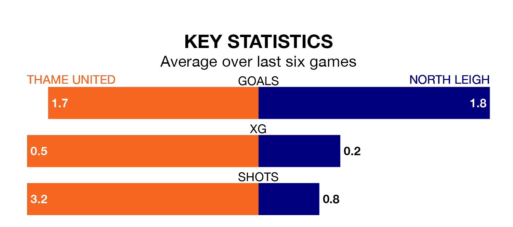

North Leigh travel to the ASM Stadium for Saturday's match against Thame United looking to bounce back from defeat last time out in the Southern League Division One Central.
North Leigh, who sit second in the league after 23 games, fell to a 3-1 home defeat to Hertford Town on February 3.
They face a Thame side who also lost their last match, a 4-2 defeat to Waltham Abbey, and who sit 18th in the table.
With 31 goals in 24 games so far this season, Thame are scoring at below the league average rate with 1.3 goals per game. And they are conceding more than average, letting in 49 goals at a rate of 2.0 per game.
North Leigh, meanwhile, are above average scorers, with 2.0 goals per game, compared to a league average of 1.7. They have conceded 1.5 goals per game.
In the last five years, Thame and North Leigh have played each other on four occasions. North Leigh won two of them and they drew twice.
On average, Thame scored 0.8 goals and North Leigh 2.0 in those matches.
Their last meeting was on November 11, when North Leigh won 3-0 at home.
United are in mixed form in the Southern League Division One Central, with three wins and three losses from their last six games.
With three wins and a draw over that period, the visitors' form is slightly better – they have taken 10 points from 18, compared to the home team's nine.
Updated: 11:43 (UTC), 08/02/24